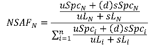

crux spectral-counts
Usage:
crux spectral-counts [options] <input
PSMs> <protein database>
Description:
Given a collection of scored PSMs, produce a list of proteins or peptides ranked by a quantification score. Spectral-counts supports three types of quantification: Normalized Spectral Abundance Factor (NSAF), Normalized Spectral Index (SIN) and Exponentially Modified Protein Abundance Index (emPAI). The NSAF method is from a publication by Paoletti et al. (2006). The SIN method is from the Griffin et al. (2010) paper. The emPAI method was first described in Ishihama et al (2005). The quantification methods are defined below:
Protein Quantification
For each protein in a given database, the NSAF score is:
where:
- N is protein index
- SN is the number spectra matched to protein index
- LN is the length of protein N
- n is the total number of proteins in the input database
With the distribution factor of shared spectra matched, the NSAF score is:
where:
- N is the protein index
- uSpcN is the unique number spectra matched to the protein index
- sSpcN is the shared number spectra matched to the protein index
- uLN is the unique length of protein N
- sLN is the shared length of protein N
- n is the total number of proteins in the input database
- d is the distributing factor of protein N, given by
For each protein in a given database, the SIN score is:
where:
- N is protein index
- pn is the number of unique peptides in protein N
- sj is the number of spectra assigned to peptide j
- ik is the total fragment ion intensity of spectrum k
- LN is the length of protein N
For each protein in a given database, the emPAI score is:
where:
- Nobserved is the number of experimentally observed peptides with scores above a specified threshold.
- Nobervable is the calculated number of observable peptides for the protein given the search constraints.
Peptide Quantification
For each peptide in a given database, the NSAF score is:
where:
- N is the peptide index
- SN is the number spectra matched to peptide N
- LN is the length of peptide N
- n is the total number of peptides in the input database
With the distribution factor of shared spectra matched, the NSAF score is:

where:
- N is the peptide index
- uSpcN is the unique number spectra matched to the peptide index
- sSpcN is the shared number spectra matched to the peptide index
- uLN is the unique length of peptide N
- sLN is the shared length of peptide N
- n is the total number of peptides in the input database
- d is the distributing factor of peptide N, given by
For each peptide in a given database, the SIN score is:
where:
- N is the peptide index
- sN is the number of spectra assigned to peptide N
- ik is the total fragment ion intensity of spectrum k
- LN is the length of peptide N


Input:
-
<input PSMs>– A tab delimited text file produced by acruxpost-search command, for examplepercolator.target.txtorqranker.target.txt. <protein database>– The name of the file in fasta format or the directory containing the protein index from which to retrieve proteins and peptides.
-
spectral-count.target.txt: a tab-delimited text file containing the protein IDs and their corresponding scores, in sorted order. spectral-count.log.txt: All messages written to standard error.
The program writes one file to the folder crux-output by
default. The name of the output folder can be set by the user using
the --output-dir option. The following files will be
created:
-
--measure <NSAF|SIN|EMPAI>– Type of analysis to make on match results: (NSAF | SIN | EMPAI). Default = NSAF. -
--quant-level <protein|peptide>– Quantification at protein or peptide level. Methods described under Description. Default = protein. -
--parsimony <none|simple|greedy>– Perform a parsimony analysis on the proteins, and report a "parsimony rank" column in the output file. This column contains integers indicating the protein's rank in a list sorted by spectral counts. If the parsimony analysis results in two proteins being merged, then their parsimony rank is the same. In such a case, the rank is assigned based on the largest spectral count of any protein in the merged meta-protein. The "simple" parsimony algorithm only merges two proteins A and B if the peptides identified in protein A are the same as or a subset of the peptides identified in protein B. The "greedy" parsimony algorithm does additional merging, using the peptide q-values to greedily assign each peptide to a single protein. Default = none. -
--threshold <double>– Only consider PSMs with a q-value lower than this threshold. The q-value may be in the file's "percolator q-value" column, "q-ranker q-value" column or "decoy q-value (xcorr)" column. Default = 0.01. -
--fileroot <string>– Thefilerootstring will be added as a prefix to all output file names. Default = none. -
--input-MS2 <string>– MS2 file corresponding to the PSM file. Required to measure the SIN. Ignored for NSAF and EMPAI. -
--output-dir <filename>– The name of the directory where output files will be created. Default = crux-output. -
--unique-mapping <unique-mapping>– Ignore peptides with mappings to multiple proteins (T,F). Default (F) -
--overwrite <T|F>– Replace existing files if true (T) or fail when trying to overwrite a file if false (F). Default = F. -
--parameter-file <filename>– A file containing command line or additional parameters. See the parameter documentation page for details.